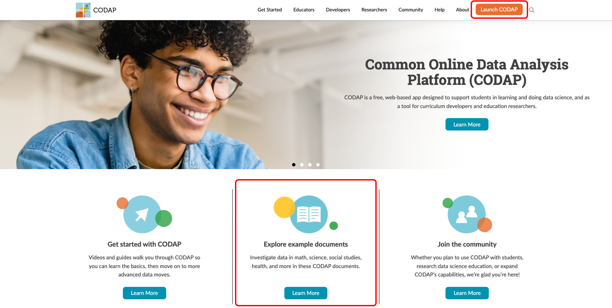
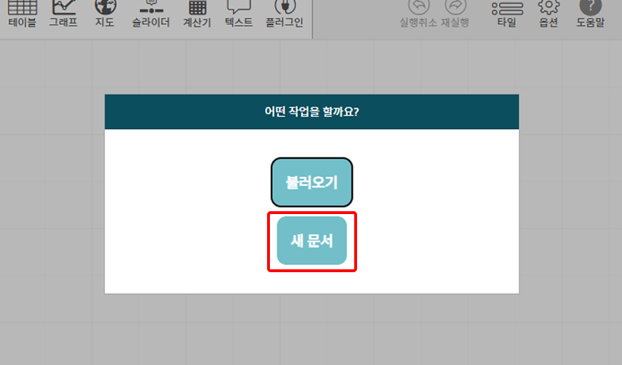
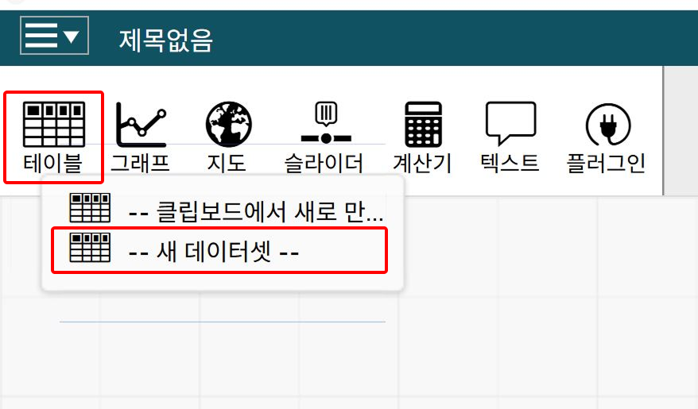
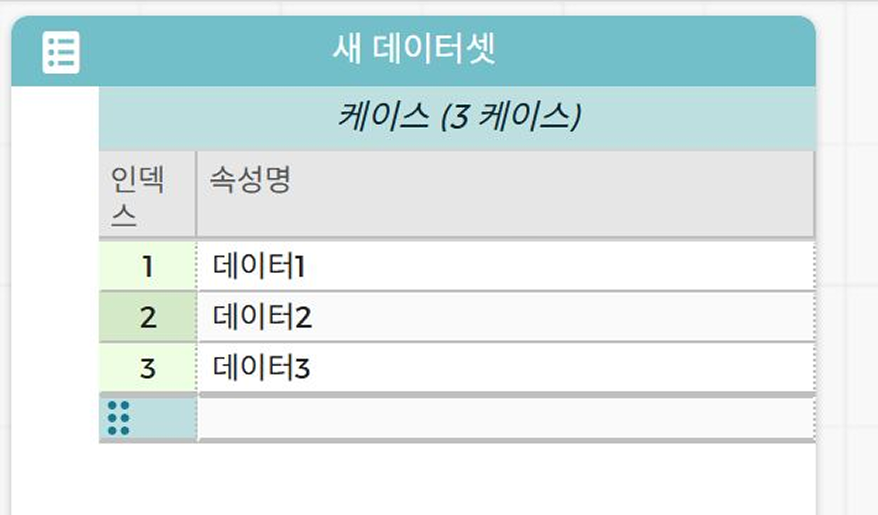

스스로 해결하기
데이터 분석 및 전처리 도구
코답은 코딩 없이 온라인에서 데이터를 분석할 수 있는 웹 기반의 오픈 소스 플랫폼이다. 코답에서 제공하는 다양한 예시
문서나 직접 수집한 CSV 파일을 불러와 데이터를 탐색할 수 있다. 코답 사용 방법을 살펴보자.
1
우측 상단의 ‘Launch CODAP’ 버튼을 클릭하여 코답을 실행한다.
2
예시 데이터를 살펴볼 수 있다.

1
코답을 실행하고 [새 문서]를 클릭한다.
2
[테이블]을 선택하고 [--새 데이터셋--]을 클릭한다.
3
‘새 데이터셋’ 테이블 작업 창에서 ‘테이블에 새 속성 추가’ 버튼을 눌러 속성을 추가하거나 데이터를 직접 입력하고 표를 만들 수 있다.
- 
- 
- 
1
[새 문서]-[메뉴]-[가져오기]를 클릭하여 처리할 데이터 파일(예: calories.csv, exercise.csv)을 불러온다.
2
불러온 파일에서 '모든 행 가져오기'를 선택하여 전체 데이터를 가져온다.
가져온 데이터에서 각 항목에 대한 정보를 살펴본다.
- ‘calories’에는 개별 ID(User ID)와 소모한 칼로리 데이터가 있다.
- ‘exercise’에는 개별 ID(User ID), 성별(Gender), 나이(Age), 키(Height), 체중(Weight), 운동 시간(Duration), 심장 박동 수(Heart_Rate), 체온 데이터(Body-Temp)가 있다.